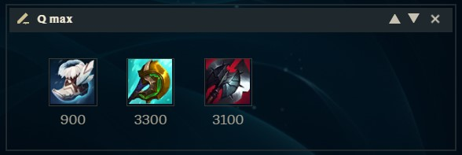
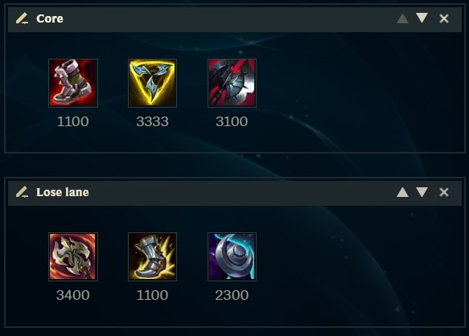
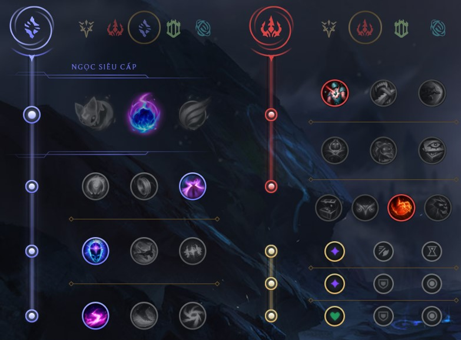

📚 Fú's Build Collection
Đây là nơi mình post những build mà mình nghĩ ra/tìm ra và điá»u tra 🕵️. Sẽ cố gắng update theo patch mới nhất
LƯU Ý:
13.10 sẽ là 1 trong những bản lớn nhất từ trước đến giá», thay đổi game hoà n toà n. Tất cả các build liên quan đến AD, hỗ trợ và sát thủ AD Ä‘á»u sẽ không còn chÃnh xác. Mình sẽ chỉ cáºp nháºt lại trang nà y sau khi đã hiểu rõ hết các thay đổi.
Một số thuáºt ngữ tiếng Anh:
MS (Movement speed): tốc độ di chuyểnengage: mở giao tranh, lao và o,...battlemage: Các tướng pháp sư tầm ngắn, nhiá»u máu. VD: Ryze, Swain, Sylas, Cassiopeia,...burst: dồn dmg trong thá»i gian ngắn, thường hay dùng để phân biệt với DPS (dmg theo thá»i gian dà i)AS: tốc độ đánh
Mục lục
Akali Annie Bel'Veth Support Cho'Gath Hecarim Udyr
Theorycrafting 13.10
Ezreal Gnar Graves Jhin Miss Fortune Senna Zeri
Akali 13.8
Bảng ngá»c
Ỡđây mình dùng các bảng tiêu biểu thôi. Thực tế thì ngá»c của Akali có nhiá»u chỗ tuỳ biến theo game, nên các bạn lấy bảng nà o mình chơi tốt là được.
Item
Mình không có vấn Ä‘á» gì với các build hiện tại của Akali. Đây chỉ là ý tưởng của mình khi xem Akali đi lane.Xuyên kháng phép và các chỉ số tank.
Các core item trong hình cho Akali ~43 xuyên kháng phép, 1k HP, 30 giáp và kháng phép, giúp Akali vừa gần như gây sát thương chuẩn trên tướng yếu máu, vừa quá trâu để hạ gục trong combat.
Vá» cuối tráºn, có thể bổ sung thêm AP với Mũ Phù Thuỷ, Trượng Hư Vô hoặc mua thêm Đồng hồ cát, Mũ Trụ Nguyá»n Rủa để cà ng khó chết hơn.Ngá»n đuốc thánh quang do đây là món đồ đỡ nhất trong 4 món tank. Tuỳ theo meta, chúng ta lựa món tank nà o tốt nhất là được.
Annie 13.8
LCK là khu vực đầu tiên chơi Annie, và tất cả khu vực khác copy build Trượng Trường Sinh từ đây.
Mình rất ghét build nà y, vì nó biến Annie thà nh Battlemage, lối chơi không phù hợp và chưa bao giỠxuất hiện trên Annie trong các mùa trước.
Bảng ngá»c
2 bảng tương ứng với 2 cách lên đồ được giải thÃch ngay bên dưới.
Item
Permaburn
Dùng cho các đội hình nhiá»u máu, không thể burst. Aura của Tibbers là m cháºm tất cả kẻ địch xung quanh, và Tibbers liên tục apply Liandry, Thiên thạch Bà ẩn, Phát bắn đơn giản trên tất cả các tướng đứng xung quanh. Tibbers gây dmg liên tục khiến Thiên thạch Bà ẩn hồi chiêu rất nhanh, kÃch hoạt cà ng nhiá»u thiên thạch hơn.
Burst
Đơn giản là mua nhiá»u AP/xuyên kháng phép nhất có thể để combo ám sát. Nếu bạn biết cách kiểm soát mana, có thể thay thế Luden bằng Đai tên lá»a Hextech để dễ engage hơn, tạo yếu tố bất ngá». Đương nhiên, build nà y hoạt động tốt nhất với các tướng yếu máu. Thay Sốc điện bằng Thú săn mồi khi cần thêm MS để engage.
Luôn luôn mua Già y Pháp sư !!!. Annie không quan tâm, không sỠdụng hiệu quả được già y nà o khác.
Bel'Veth Support 13.9
Bel'Veth hiện tại hoà n toà n có thể chơi ở vị trà hỗ trợ. Ỡbản 13.10, Bel'Veth hỗ trợ sẽ cà ng mạnh hơn.
Bảng ngá»c
Ỡvị trà hỗ trợ, luôn luôn lấy Sãn sà ng tấn công để tăng dmg cho cả bản thân và AD. Có thể đổi sang Giáp cốt nếu muốn chơi theo kiểu all-in.
Item
Vai trò của Bel'Veth ở vị trà hỗ trợ là sá» dụng khả năng cơ động của mình để mở giao tranh bằng W, hút sát thương với E và thoát ra ngoà i. Độ cơ động là sự khác biệt lớn nhất giữa Bel'Veth hỗ trợ so với Leona, Nautilus, Thresh,...Giáp vai Nguyệt thần , mua Solari chỉ khi có giá trị counter các tướng đối phương (Và dụ: Karthus, Gankplank, Fiddlesticks,...).Rìu đen để bổ sung thêm dmg cho team.
Chogath Battlemage 13.8
Một trong số Ãt tướng có khả năng Quadra flex.
Bảng ngá»c
Thú săn mồi là cách để engage trên các tướng đánh xa. Combo Thú săn mồi + Trượng băng vĩnh cá»u sẽ cho bạn rất nhiá»u cơ hội solokill.Thợ săn tối thượng
Nếu đối phương có nhiá»u melee, chuyển sang dùng Mưa kiếm để dồn dmg bằng E.
Khoảng 1 tháng trước, Gumayusi có chơi Cho'gath đường dưới bằng Thiên thạch Bà ẩn . Nghe có vẻ hợp lý, nhưng thực sự rất troll, vì Thiên thạch không có giá trị gì trong lane và sau early game.
Item
Trượng băng vĩnh cá»u: Setup cho Q để solokill tướng yếu máu. Lưu ý tầm sá» dụng không quá dà i, nên nếu gặp nhiá»u tướng đánh xa thì nên kết hợp Thú săn mồi .Trượng trường sinh: Đáng cân nhắc nếu team mình không có quá nhiá»u tank. Bạn sẽ là mục tiêu số một do kÃch cỡ tướng lớn và rất cháºm. Lên kèm với các món tank, đặc biệt là Thú tượng thạch giáp .KÃnh ngắm ma pháp: Item nà y tăng dmg cho cả sát thương chuẩn.
Hecarim 13.10
Bảng ngá»c
Quan điểm cá nhân của mình là không nên lấy Tăng tốc pha do Hecarim cần ưu tiên dmg.
Item
Mình nghĩ không cần giải thÃch quá nhiá»u vá» Rìu đen . Hecarim cần một món dmg nữa để khai thác nội tại giảm giáp, và Manamune theo mình là lựa chá»n tốt nhất. Các lựa chá»n đồ thần thoại gồm:Giáp vai nguyệt thần vừa được giảm giá xuống 2300g ở phiên bản nà y.
- Chuỳ hấp huyết: counter sát thủ
Udyr 13.10
Udyr có 2 lối chơi chÃnh là max R (Phượng hoà ng) và max Q (Gấu). Bà i nà y sẽ cố gắng phân tÃch cả 2 lối chơi, nhiá»u ý tưởng đến từ streamer Aribo (EUW).
Bảng ngá»c
Udyr có lối chơi khá tương đồng với Hecarim nên cũng có bảng ngọc khá giống.
Đối với Udyr top, có thể sá» dụng Sẵn sà ng tấn công để hỗ trợ burst cho Gấu, hoặc Quyá»n năng bất diệt khi build tank Phượng hoà ng.
Item
Phượng hoà ng
AOE và là m cháºm xung quanh, thÃch hợp cho các game thiếu AP hoặc có nhiá»u melee.
Già y bạc: Do lối chơi của Udyr, MS là một trong những chỉ số quan trá»ng nhất. Chỉ nên đổi sang Già y thép gai hoặc Già y thuỷ ngân trong những game thực sự có tác dụng lớn.Phong ấn hắc ám để có cơ hội nâng cấp thà nh Mejai . Mejai không chỉ có AP mà còn cho 100 HP và 10% MS cộng thêm, tất cả chỉ với 1600g.Mũ trụ nguyá»n rủa: Core item trong các build lên đồ thần thoại tank. Hãy nhớ, đối với Udyr, AP không chỉ là dmg mà còn là chống chịu thông qua lớp khiên W, và chúng ta luôn max W 2nd. Lượng dmg từ item nà y giúp Udyr clear rừng và solo rồng, sứ giả nhanh hơn nhiá»u. Đặc biệt, từ sau khi được rework, Udyr có thể kÃch hoạt nâng cấp R (skill nhiá»u dmg nhất) từ khoảng cách rất xa.Giáp vai nguyệt thần: Đồ tank hiện tại quá yếu và không đáng để lên (Jak'sho, Ngá»n đuốc thánh quang). Giáp vai nguyệt thần vừa được giảm giá xuống 2300g ở phiên bản nà y.
Động cơ vũ trụ vừa được buff. Đây là một món đồ khá phù hợp cho Udyr, giúp bắt kịp các tướng đánh xa.
Điểm yếu lớn nhất của lối lên đồ ở trên là có 2 core item. Trong một và i game, bạn sẽ cần phải có 2 món tank thần thoại để counter một và i tướng cụ thể. Và dụ: team đối phương có Jax, Cassiopeia và Kog'maw. Sẽ là lợi thế rất lớn trong các pha combat nếu như bạn có thể lên Tim băng và Giáp thiên nhiên . Nếu như lên đồ theo build bên trên, 2 món nà y sẽ lần lượt đẩy xuống 3 và 4, và có thể khiến bạn thua các pha combat mid game.
Để khắc phục vấn Ä‘á» nà y, chúng ta có thể sá» dụng 2 món đồ thần thoại khác là Tam hợp kiếm (tăng MS, bắt kịp các tướng đánh xa) và Búa rìu sát thần (chống tank, hồi máu giữa combat). Udyr sá» dụng rất tốt Thuỷ kiếm , giúp việc clear rừng ở đồ đầu tiên nhanh hơn, và 1v1 tốt hơn.
Gấu

- Chuỳ hấp huyết: counter các sát thủ, hoặc những tướng đánh gần Ãt HP. Các trang bị thà nh phần của item nà y rất mạnh, phù hợp cho việc snowball đầu game.Chuỳ phản kÃch: giữ chân các tướng đánh xaBúa rìu sát thần: out dmg 2 món trên nếu như đối phương mua nhiá»u HP. Rìu đen .Rìu mãng xà : phù hợp cho Udyr top với hút máu, nhiá»u AD, clear lÃnh, giúp 1v1 và đẩy lẻ tốt hơn.
Theorycrafting 13.10
Như má»i người đã biết, phiên bản 13.10 là m lại rất nhiá»u item cho nhiá»u lớp tướng khác nhau. Bên dưới đây là các build mình nghĩ ra/tổng hợp lại. Các build nà y rất mạnh, nhưng mình chưa có thá»i gian "điá»u tra" nên không dám ghi chung với phần bên trên.
Ezreal 13.10
ADC mạnh nhất game. Tất cả build đều được buff.
Bảng ngá»c
Mặc định là Chinh phục . Nếu build táºp trung nhiá»u và o đánh thường thì có thể đổi sang Sẵn sà ng tấn công .Thợ săn tà i tình , giảm hồi chiêu Thuỷ kiếm . Điểm yếu của nhánh nà y là cần có mạng đầu game để stack. Theo mình, nhánh Pháp thuáºt vẫn ổn định nhất.
Item
Crit
Phù hợp cho các game nhiá»u melee/tank, táºn dụng thêm các đòn đánh thường, so le với Q.
Sát lực
Build gây nhiá»u dmg nhất trên Q. Dùng build nà y khi bạn chỉ poke trong combat.Youmuu là món cho nhiá»u sát lực và AD nhất game. Tình hình có thể thay đổi trong bản kế tiếp (13.11).
Liandry (???)
Trong soloQ, đôi lúc team pick một đội hình full AD. Đây là tình huống đặc biệt, và cũng là duy nhất, để chúng ta sá» dụng Liandry, đa dạng hoá nguồn dmg trong đội hình. Đương nhiên, các món Xuyên giáp, Sát lực như Serylda sẽ yếu hơn trong build nà y.
Rìu đen để giảm giáp, giúp tăng dmg cho cả team.
Tam hợp kiếm
Đây là build duy nhất mà Ezreal có thể mua HP sớm, tốt khi gặp các đội hình lao và o. Và dụ như Kennen, Viego, Ahri.
Gnar 13.10
Một trong những tướng blind top tốt nhất soloQ. Tuy nhiên, hiện có nhiá»u người chỉ biết tới 1 build dà nh cho Gnar.
Bảng ngá»c
Mặc định là Bước chân thần tốc. Yếu tố quan trá»ng nhất trong lối chơi của Gnar là spacing, và đây là ngá»c tốt nhất cho yếu tố nà y.
Item

Tam hợp kiếm là item thần thoại nhiá»u dmg nhất dà nh cho Gnar. Lượng tốc độ chạy từ món đồ nà y khiến Gnar thả diá»u tốt hơn, và cực kì khó chịu ở 2 đường cánh. Ngoà i ra, Mega Gnar là vị tướng có AD cơ bản cao nhất game, nên đương nhiên có thể sá» dụng tốt item nà y.Rìu đen hiện tại là một trong các item huyá»n thoại mạnh nhất dà nh cho đấu sĩ. Trong các lane mà Mini Gnar mạnh hơn Mega Gnar (Irelia, Garen, Olaf,...), có thể xem xét rush Rìu đen và Già y Ionia.
Điểm chung của những tướng nà y là không thể thả diá»u và luôn luôn thắng một khi chúng all-in, việc hồi chiêu nhanh hơn giúp bạn né được các pha all-in nà y, tiếp tục lối chơi poke.Tam hợp vì bạn không thể đẩy lẻ được nữa, do không thể solo thắng ở đường cánh.Rìu mãng xà là trang bị mạnh nhất khi Gnar thua lane, cung cấp hút máu, AD miễn phà và hồi chiêu, giúp Gnar trụ đường tốt.Giáp vai nguyệt thần .Già y cuồng nộ bù cho lượng AS mất đi từ Tam hợp .
Graves 13.10
Một trong những tướng mạnh nhất game ở thá»i điểm hiện tại, do tất cả build Ä‘á»u được buff, trừ Negan nhiá»u khả năng đã bị xóa sổ :(
Bảng ngá»c
Bước chân thần tốc là ngá»c then chốt ổn định nhất cho cả Graves đi lane và đi rừng. Nếu bạn chơi Graves sát lực, có thể thay thế bằng Sốc điện hoặc Đòn phủ đầu .
Do game hiện tại đặt nặng việc kiểm soát mục tiêu, mình đánh giá rất cao Thuỷ thượng phiêu , không chỉ cho Graves mà hầu như tất cả các tướng đi rừng.
Với các build không phải Sát lực, có thể cân nhắc nhánh Kiên định để lấy chống chịu miễn phÃ.
Item
Do cơ chế reload, Graves không nên lên quá nhiá»u AS. Các bạn có thể thấy mình không Ä‘á» xuất Già y cuồng nộ trong build nà o cả. Nếu như cả Tabi và Già y thuỷ ngân Ä‘á»u không phù hợp, có thể giữ Già y 1 và ưu tiên lên đồ lớn.
Kiếm Âm u . Theo mình, item nà y ngoà i tương tác khá mạnh với Mắt thây ma thì không có nhiá»u tác dụng lắm. Chỉ số của Kiếm âm u quá yếu, và tất cả các build của Graves Ä‘á»u cần khoảng 2 item để bắt đầu mạnh. Nếu như đã quen mua Kiếm âm u thì các bạn có thể mua, nhưng mình cực kỳ không khuyến khÃch.
Sát lực
13.10 buff 2 item rất quan trá»ng cho Graves sát lực là đồ thần thoại và Súng hải tặc . Với Youumu mới, Graves không cần phải lên già y mà vẫn di chuyển rất nhanh trong rừng, và combo burst của Graves gây cực kỳ nhiá»u dmg.
Đấu sĩ
Má»i người biết nhiá»u đến build nà y thông qua Chùy hấp huyết . á» bản 13.10, Graves còn có thể sá» dụng Tam hợp kiếm , dmg cao hơn và tăng nhiá»u tốc độ chạy, chỉ số rất quan trá»ng cho Graves. Graves cũng có chỉ số AD cơ bản rất ấn tượng.Phong thần kiếm (jg)/Dao điện Statikk (lane) và Rìu đen trước đồ thần thoại. Bó tên ánh sáng giúp Graves dá»n lÃnh và rừng rất nhanh, và Graves có thể full stack Rìu đen bằng chỉ một đòn đánh crit.
Jhin 13.10
Vị tướng hưởng lợi rất lớn từ xu hướng giảm AS, thêm AD trong các món đồ mới.
Bảng ngá»c
Item
Gặp tướng yếu máu
Phong thần kiếm quá phù hợp với lối chơi của Jhin, giúp đánh thường poke, thả diá»u, hỗ trợ đẩy lÃnh, cung cấp nhiá»u AD.
Đổi sang Dao điện Statikk trong các lane cần đẩy lÃnh nhanh.Cung phong linh và Súng hải tặc được buff rất mạnh trong bản 13.10, giúp combo với nhát 4 có khả năng kết liễu rất mạnh và bất ngá».Huyết kiếm vừa cung cấp hút máu, vừa cho nhiá»u AD nhất game. Lại một item được là m lại theo hướng vô cùng phù hợp cho Jhin.
Gặp tướng nhiá»u máu
Combo Vô cực kiếm và Huyết kiếm cung cấp quá nhiá»u AD ở món 3. Bổ sung thêm Ná» thần Dominik nếu cần xuyên giáp.
Miss Fortune 13.10
Điểm mạnh lớn nhất của MF là có đa dạng build, có thể là nhiá»u nhất trong tất cả ADC, và một và i biến thể có thể được chơi ở vị trà hỗ trợ.
Bảng ngá»c
Sẵn sà ng tấn công là lựa chá»n tốt nhất cho Crit MF. MF thông thường không cần đến 6 AA để hạ các carry đối phương.
Bảng ngá»c chÃnh cho build Sát lực, táºp trung và o poke và chiêu cuối.
Bảng ngá»c dà nh cho MF AP.

Có một con tướng miễn nhiễm với poke ở đường dưới, đó là Jhin (Bước chân thần tốc , Già y + 4 bình máu, MS cao,...). Đặc biệt trong lane nà y, chuyển sang Đòn phủ đầu và chơi full scaling (táºp trung hoà n toà n cho mid/late game).
Item
Crit
Dao điện Statikk đẩy nhanh tốc độ đẩy lÃnh cho MF, giúp MF đè lane tốt hơn. Cho những game cần thêm dmg (gặp nhiá»u tank), có thể đổi sang
Móc diệt thủy quái .
Khi có đủ AS,
Navori có thể cho MF Q mỗi 1.5s. Item nà y out DPS
Vô cực kiếm .
Nguồn ảnh: mnogi
Sát lực
Kiếm ma Youmuu cung cấp quá nhiá»u MS, cho phép ta bá» qua cả Già y và tiết kiệm ~1k và ng cho đồ lớn.Rìu đen stack trên từng phát đạn của chiêu cuối.Huyết kiếm là item không thể thiếu, do cung cấp quá nhiá»u AD và hút máu.
AP
Bản 12.21 buff AP scale của chiêu E. Build nà y có thể chơi ở cả vị trà carry và hỗ trợ.Dao điện Statikk: Khi chơi MF AP ở vị trà carry, rất khó để farm và o đầu game do không có AD. Dao điện Statikk là món đẩy lÃnh mạnh nhất early game, giúp MF farm ổn định, trước khi bắt đầu mua AP để poke. Nội tại của Dao điện scale với AP, và đương nhiên sẽ kết hợp tốt với các món AP mà MF mua, giúp MF vừa đẩy lÃnh nhanh, vừa poke mạnh bằng E, mà vẫn có một chút sát thương đánh thường và sát thương Bão đạn khi cần.Dao điện , nên lên 4 điểm W trước khi max E.Động cơ vũ trụ nếu cần thêm slow, và Trượng Hư vô nếu cần dmg.Mũ trụ nguyá»n rủa: chỉ mua khi đối phương có rất nhiá»u HP (Sion, Cho'gath, Zac,...).Lưu ý: tác dụng chÃnh của build AP là đa dạng hoá nguồn dmg, chỉ sá» dụng khi team không có AP/khi đi hỗ trợ.
Senna 13.10
Một trong những bà i viết lạ nhất cho cả trang web nà y.
Bảng ngá»c
Bước chân thần tốc là lựa chá»n ổn định nhất, phù hợp với cách trade của Senna trong lúc đi lane và cách giữ vị trÃ, gây dmg trong phần còn lại. Với những người mới chơi Senna thì nên lấy ngá»c nà y 100% game.Chinh phục ) phát huy tác dụng trong một và i trường hợp rất nhất định.
Nhánh phụ Kiên định dà nh riêng cho build enchanter, sẽ nói đến ở phần sau.
Item
Già y thép gai: Từ khoảng 2 năm trở lại, tất cả Senna mặc định lên Già y bạc .
Lý do lớn nhất mà má»i người có thể nghĩ ra là chạy nhanh để "giữ vị trÃ, né chiêu".
Không có AD nà o không cần giữ vị trÃ, tại sao không có AD nà o khác lên Già y bạc ?
Thay vì lên thêm 15 MS và tin và o khả năng phản xạ của bản thân, thì một cách tư duy tốt hơn là lên thẳng giáp, để ngay cả khi trúng chiêu vẫn không nháºn nhiá»u dmg.
Mình rush già y 2 trong tất cả game Senna, vì các pha trade đầu game với Senna hầu như chỉ dừng lại ở farm linh hồn, nên mình muốn MS và chống chịu để lui vỠan toà n nhất.
Đối với một và i game nhất định, Senna sẽ cần lên Già y thuỷ ngân .
Fasting Senna
2 món carry tốt nhất cho Senna là Móc diệt thuỷ quái và Guinsoo . Cố gắng có Huyết kiếm trong build hoà n thiện, do lượng AD quá lớn mà item nà y mang lại.
Support Senna
Solari: giải thÃch tương đối dà i dòng. Tất cả má»i người Ä‘á»u biết thừa rằng điểm yếu lớn nhất của Senna là quá má»ng, cực kỳ dễ chết khi bị engage. Hơn nữa, do thường được đánh ở vị trà hỗ trợ (cho 1 AD khác), cả 2 Ä‘á»u trở thà nh miếng mồi cho đối phương. Chỉ cần thua một chút, và để AD đối phương có lợi thế, Senna và AD của mình sẽ thà nh mục tiêu dive liên tục.
Hầu như các tướng lao và o Ä‘á»u không thể vượt qua lớp khiên của Solari. Thá»i gian hồi 90s ngắn hơn đa số chiêu cuối của các tướng ở giai đoạn 1 đồ. Cộng thêm 200 HP, 30 giáp và 30 kháng phép, Senna trở nên rất khó bị hạ gục, nhưng vẫn gây sát thương tốt nhá» lượng sát thương cơ bản rất cao ở chiêu Q và nội tại. Một điểm nữa cần lưu ý là Solari khá giống với các lựa chá»n Bước chân thần tốc cũng như Già y thép gai , Ä‘á»u giảm thiểu thiệt hại và rủi ro khi Senna bước lên trade trong lane để farm linh hồn.Guinsoo: Giả sá» như đối phương không có tướng lao và o, hoặc bạn đang có quá nhiá»u lợi thế và thực sự không cần đến Solari, thì có thể lựa chá»n item nà y để gây nhiá»u DPS nhất trong combat. Swap sang Vô cực kiếm ở món 6.Gươm Suy Vong: Do không được farm giống như các AD khác, Senna cần lên những món đồ mạnh nhất 1 cách độc láºp. Gươm Suy Vong không chỉ gây dmg ổn định, mà còn cung cấp hút máu, tương tác rất tốt với Solari.
Enchanter
Build nà y lợi dụng tương tác rất lỗi giữa Suối nguồn sinh mệnh và Vá»ng âm Helia . Suối nguồn sinh mệnh trên mục tiêu
- AD đánh thường mục tiêu
- Suối nguồn sinh mệnh hồi máu AD và kÃch hoạt Helia
- Cả Senna và AD liên tục đánh thường mục tiêu, và liên tục kÃch hoạt Helia
Lư hương sôi sục và Trượng lưu thủy được giảm giá xuống 2100g, giúp Senna đạt các ngưỡng sức mạnh rất sớm.
Câu há»i thường gặp: Tại sao lại không mua...
Sát lực? Troll :). Sát lực tăng giá trị theo level, và không phải là lựa chá»n dà nh cho vai trò có level thấp nhất trong game. Q của Senna có thá»i gian hồi rất lâu nếu thiếu AS, nên Senna cũng không hưởng lợi quá nhiá»u từ việc mua Sát lực.Đại bác liên thanh? Vô dụng. Nếu farm linh hồn đúng cách, Senna rất dễ dà ng đạt tầm đánh 650+ và o cuối game. Dmg và on-hit luôn là những lựa chá»n tốt hơn, thay cho việc tăng tầm đánh mỗi 8s (100 stack TÃch Điện).Trái tim khổng thần? Mình không còn lá»i nà o để nói :(. Há»c cách người Hà n chơi game, không phải cách người Hà n build. Still <3 Keria.
Zeri 13.10
Build đấu sĩ Zeri (hồi mói ra mắt) đã quay trở lại để thay thế cho Ná» tá» thá»
Bảng ngá»c
Nhánh phụ Kiên định tăng khả năng chống chịu cho Zeri.
Item
Quan trá»ng nhất trong build là Tam hợp kiếm , cho Zeri nội tại Thủy kiếm, AS và HP. Các món còn lại mua tùy theo thế tráºn, nhưng nên có một món hút máu trong build cuối cùng.